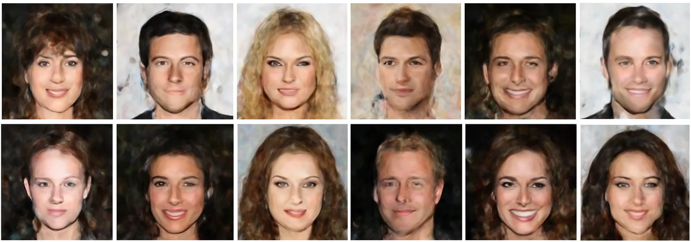

Tokenized Neural FieldsStructured Representations of Continuous Signals
A continuous signal can be represented by a small set of learnable tokens. A shared decoder reads those tokens at any query coordinate, making the same representation useful for reconstructing sparse observations, sampling plausible completions, and generating new signals.
How TNF works
Each signal has its own token set. The decoder uses cross-attention to read the tokens at a given coordinate. For a new signal, the decoder stays fixed and gradient descent fits its tokens to the available coordinate–value pairs, including scattered measurements.

Reconstruction and posterior sampling
We compare TNF with grid interpolation and per-instance SIREN on 1D waves, simulated black-hole images, Navier–Stokes vorticity, and ERA5 weather fields. With a learned prior over token sets, TNF can also draw multiple reconstructions conditioned on the same observations.


Generation and token specialization
A Diffusion Transformer trained on fitted token sets can generate new sets that the shared decoder turns into images or 3D scenes. Cross-attention maps also show that individual tokens can specialize to similar regions across instances.
